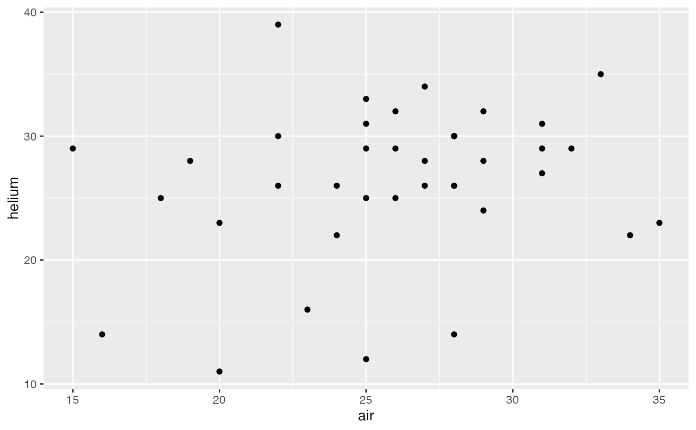
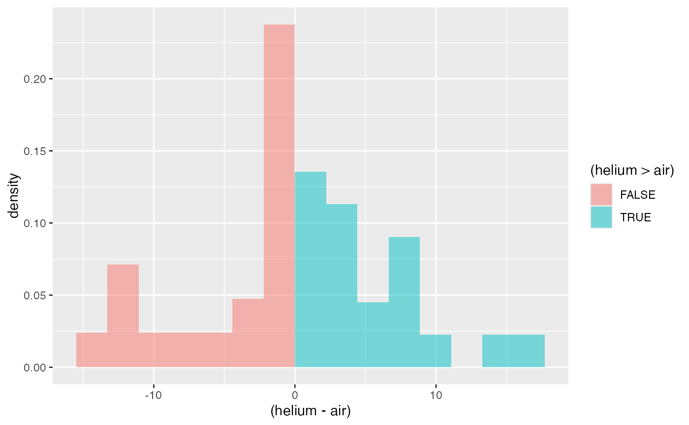

Two identical footballs, one air-filled and one helium-filled, were used outdoors on a windless day at The Ohio State University's athletic complex. Each football was kicked 39 times and the two footballs were alternated with each kick. The experimenter recorded the distance traveled by each ball.
A data frame with 39 observations on the following 3 variables.
trial trial number
air distance traveled by air-filled football (yards)
helium distance traveled by helium-filled football (yards)
These data are available from DASL, the data and story library (http://lib.stat.cmu.edu/DASL/).
Lafferty, M. B. (1993), "OSU scientists get a kick out of sports controversy", The Columbus Dispatch (November, 21, 1993), B7.
data(HeliumFootballs)#> Warning: data set ‘HeliumFootballs’ not foundgf_point(helium ~ air, data = HeliumFootballs)gf_dhistogram( ~ (helium - air), data = HeliumFootballs, fill = ~ (helium > air), bins = 15, boundary = 0 )